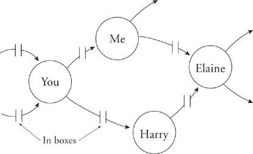
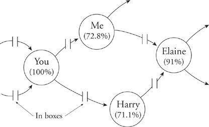
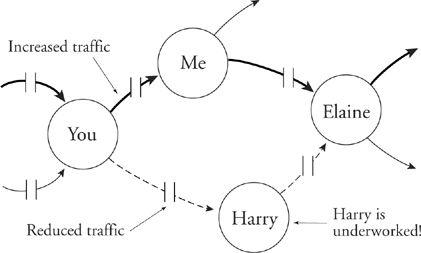

How We Work Together
I am concerned about the cases when Hurry Up really means Slow Down. To understand this possibility, it helps to return to the model of the organization as a linked set of tasks where the nodes are people and the links are passed information, work products, and by-products.

Any natural unevenness in the tasks will cause some inefficiency: for example, Elaine remaining idle while she awaits input from Harry. The overimproved variant of the same operation increases efficiency (or at least busyness) by reducing manpower at each of the nodes—we assign some of the workers part-time to other tasks—until the system runs with buffers, never building up too much and never emptying. Now everyone is 100 percent busy all the time.

As a static picture this may look efficient. But in modern knowledge work, nothing is ever static. Things change on a day-to-day basis. This results in new unevenness of the tasks, with some people incurring additional work (their buffers build up), while others become less well loaded, since someone ahead of them in the work chain is slower to generate their particular kind of work to pass along.

Now put yourself in Harry’s place when this happens. He notes that his buffer is emptying. He also notes the pervasive mantra of Hurry Up, Hurry Up, which he interprets to mean Stay Busy. With everyone around him working furiously, he is never going to feel safe if he finishes the last item in his in-box and then waits patiently for someone to feed him something else to work on. You can understand why he might conclude that his job security is not well served by his appearing to be idle.
The survival tactic that Harry and others like him hit upon when their buffers begin to empty is to slow down. He slows down only enough to keep his supply of waiting work stable. If he slowed down more than that, he would appear to be a bottleneck, which would focus management on his work rate. So he doesn’t do that; he slows down just enough. Harry is now busy 100 percent of the time, has a healthy buffer of work waiting for him, and is not a bottleneck. This is a recipe for job security; the guy is obviously an ideal employee, judged by his part in helping the Hurry Up organization to work smoothly.
That’s how the Hurry Up mantra and an increased focus on busyness can end up causing people to slow down. If that’s what you want, go for it.